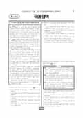

문제지

시험지 만들기준비하고 있어요. 열리면 아래 탭에서 바로 쓸 수 있어요.
전국연합학력평가 · 시·도교육청 주관
2022년 6월 고2 학력평가 국어 1등급컷은 원점수 91점(추정), 표준점수 최고점은 141점입니다.
원점수 1등급컷은 공식 발표값이 아니라 EBSi·입시기관 값입니다. 등급별 값은 등급컷 표, 출처 구분은 데이터 원칙에 있습니다.

| 등급 | 표준점수 이상 | 인원(명) | 비율 |
|---|---|---|---|
| 1 | 133 | 12,542 | 4.72% |
| 2 | 126 | 18,465 | 6.94% |
| 3 | 117 | 30,884 | 11.61% |
| 4 | 107 | 46,100 | 17.34% |
| 5 | 94 | 56,604 | 21.29% |
| 6 | 81 | 42,952 | 16.15% |
| 7 | 72 | 38,837 | 14.61% |
| 8 | 69 | 9,186 | 3.45% |
| 9 | 53 | 10,335 | 3.89% |
시·도교육청 공개 자료
출처: 시·도교육청이 공개한 전국연합학력평가 성적 분석·통계자료(공개 자료 보기).
EBSi 응답자 기준으로 가장 많이 틀린 문항은 24번(2점)이고, 오답률은 62.6%입니다. 오답률 50%를 넘은 문항은 9개입니다.
| 순위 | 문항 | 배점 | 오답률 | 정답 | 많이 고른 오답 |
|---|---|---|---|---|---|
| 1 | 24번 | 2점 | 62.6% | ③ | ② 20.8% |
| 2 | 38번 | 2점 | 61.5% | ④ | ② 24.3% |
| 3 | 11번 | 2점 | 58.7% | ② | ⑤ 24% |
| 4 | 31번 | 2점 | 56.8% | ① | ④ 19% |
| 5 | 15번 | 2점 | 56.3% | ③ | ④ 29.1% |
| 6 | 33번 | 3점 | 53.7% | ③ | ① 20.2% |
| 7 | 14번 | 2점 | 52.9% | ① | ② 17.8% |
| 8 | 28번 | 2점 | 50% | ② | ④ 23.8% |
| 9 | 23번 | 3점 | 50% | ② | ① 20% |
| 10 | 39번 | 2점 | 47.3% | ① | ③ 36.1% |
| 11 | 32번 | 2점 | 44.9% | ① | ③ 12.3% |
| 12 | 6번 | 3점 | 44.5% | ⑤ | ③ 21% |
| 13 | 12번 | 3점 | 44.2% | ④ | ③ 17.9% |
| 14 | 27번 | 2점 | 42.1% | ③ | ② 16.7% |
| 15 | 30번 | 2점 | 41.9% | ④ | ② 14.5% |
EBSi 가채점 응답자 기준 · 전 문항 중 오답률 상위 15문항
출처: EBSi 역대 등급컷·오답률 공개 화면. 가채점에 참여한 EBSi 이용자 응답이라 전체 응시자 정답률과는 다를 수 있습니다.
발행 기관: 시·도교육청(전국연합학력평가). 파일 위치: 이 사이트가 보관한 사본. 저작권은 발행 기관에 있습니다. 원본과 다르거나 게시 중단이 필요하면 연락처로 알려 주세요. 등급컷 출처 구분은 데이터 원칙에서 설명합니다.
막대 색은 역대 대비 난이도 · 진한 막대가 이 시험 · 막대를 누르면 그 회차로 이동
| 회차 | 1등급컷 | 표점 최고 | 1등급 표점 | 난이도 |
|---|---|---|---|---|
| 6월 학평2022년 고2이 시험 | 91 | 141 | 133 | 매우 쉬움 |
| 3월 학평2022년 고2 | 95 | 135 | 131 | 매우 쉬움 |
| 11월 학평2021년 고2 | 96 | 133 | 130 | 매우 쉬움 |
| 6월 학평2021년 고2 | 94 | 136 | 131 | 매우 쉬움 |
| 3월 학평2021년 고2 | 76 | 167 | 138 | 매우 어려움 |
국어는 교육청 채점 결과 1등급 구분 표준점수가 133점, 최고점이 141점(761명)으로 3월(1등급 131점, 최고점 135점)보다 조금 어려웠습니다. 응시자는 265,905명, EBSi 가채점 응답자 기준 오답률 50%를 넘은 문항은 9개였지만 가장 많이 틀린 문항도 62.6%로, 한두 문항이 튀기보다 50~60%대 문항이 고르게 분포했습니다.
가장 많이 틀린 24번(2점, 62.6%)은 <보기>를 바탕으로 박지원 「능양시집서」를 감상하는 문항, 38번(61.5%)은 각막과 공막, 수정체 등 안구 구조에 대한 이해 문항, 11번(58.7%)은 격 조사·접속 조사·보조사를 다룬 문법 문항이었습니다.
16~20번은 딸기의 매향·설향처럼 품종을 개량한 육성자의 지식 재산권을 보호하는 식물 신품종 보호 제도를 다룬 지문, 26~30번은 고통이 인간 실존의 일부라 보고 실존적 공허감에 빠진 현대인에게 견디는 힘을 길러 주려 한 프랭클의 심리치료를 다룬 지문이었습니다. 38~42번은 시각 기관인 눈의 안구와 부속 기관을 설명한 지문이었습니다.
문학은 이색 「부벽루」, 김득연 「산중잡곡」, 박지원 「능양시집서」(21~25번), 진성운이 대원수가 되어 천자를 구하는 「진성운전」(31~34번), 인간 시간으로 2년, 개의 시간으로 10년을 함께한 찬성과 늙은 개 에반을 그린 김애란 「노찬성과 에반」(35~37번), 띄어쓰기 없이 쓴 이상 「거울」과 천양희 「가시나무」(43~45번)였습니다.
화법·작문은 스마트폰이 없으면 불안해하는 '노모포비아'를 다룬 발표(1~3번), 정리 정돈을 소재로 한 글(4~7번), 전통 음식 떡을 소개하는 교지 글(8~10번)이었습니다.